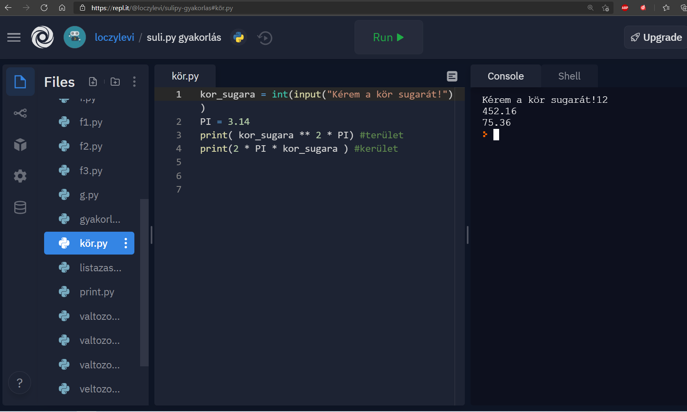

Eleinte amikor elkezdtük az évet ha jól emlékszem az "Our first turtle programban" rajzoltunk különféle Python-os kodokkal alakzatokat szines ábrákat.
A webolal maga tök jó volt nagyon sok oktató résszel látták el íme pár kép az munkáimról!
Nem is gondolná az ember hogy mennyi kód sort kell leirni ilyen egyszerű logohoz...
A turtle-ben a rajzolgatás csak bemelegítés volt ezután keztünk el csak jobban belesüllyedni a tananyagban. A "Phytonidomár" segítségével, szines példák és okató videok rengetege segített megérteni a programozás rejtelmeit.
Ezeket a feladatokat többé kevésbé a "Github" -ra kellet feltölteni íme pár munkám
Szerintem lapozzunk mert rengeteg feladat van a github-omon feltöltve de túl hosszú lenne ha mindegyiket bemutatnám!
Miután naggyából átnyálaztuk a Phtyonidomárban" lévő anyagot ezután egy nagyon jó weboldalon gyakoroltnuk az "Edabiten" ahol, személy szerint rengeteg gyakorlatot szereztem.
Lényegében Úgy müködött hogy ha megcsináltál egy feladatot akkor XP-(experience) Tapasztalatot gyüjtöttél, ki lehetet választani a nehézségi fokot és a programozási nyelvet.
Sajnálatos módon fizetős lett igy nem tudom bemutatni a munkáimat :( ,bár 400 xp gyüjtöttem szoval foglalkoztam is vele rendesen!
Lassan munkáim végéhez érünk, de még van egy pár anyagrész szóval folytassuk is!
Igazából nem régkezdtünk elméleti és gyakorlati tananyagot venni a suli.py -on lényegében ugyanaz mint a Phtonidoimárban csak van némi külömbség mint például: a suli.py-nál a feladatokhoz nincs megoldó kulcs ami bizonyos szemszögből pozitivum, nincs kisértés...nagyobb a kihivás, a Pythonidoimárban személy véleményem szerint jobban érthető a tananyag mint a suli.py-nál kicsit nehezebb.
Továbbá nem csak az Githubon hanem a repl.it-en is töltünk fel feladatokat amit az utobbi időben eléggé megszerettem miért is? Kérem szépem azért mert egyszerre többen is lehet használni értcsd úgy hogy megosztjuk egymással a repl.it linkét és eggyüt tudunk "belepiszkálni", javítani,segíteni egymás munkáját ami szerintem egy remek dolog.
Ime pár munkám "Rep.it"-en!
Nagy nehezen de eljutottunk a végéhez igazából az elmult pár órában a "Solo learn"-on gyakorlunk ami egy tök jó interaktív tanító/kérdezgetős weboldal. szóval az ember nem is alszik el közben :) Ami még pozitivum ebben a weboldalban hogy nem csak egy fajta programozási nyelvet lehet tanulni/gyakorolni hanem TÖBBET a népszerű nyelvek mind ott vannak konkrétan:
Satöbbi...